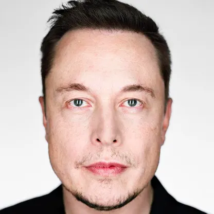

Ambition, technology, and public debate
A biography and career chronicle
Elon Musk was born in Pretoria, South Africa, in 1971. As a young adult, he moved to Canada and later studied physics and economics at the University of Pennsylvania. He began graduate study at Stanford University in California but left after a short time to work on internet businesses during the early growth of the web.
His first companies included Zip2, which provided online city guides, and X.com, an online financial service. X.com later became part of PayPal, which eBay acquired in 2002. The sale gave Musk resources to pursue larger ambitions in transportation and space.
In 2002, he founded SpaceX to develop rockets and spacecraft, with the goal of reducing the cost of spaceflight. The company later achieved reusable rocket landings and began carrying cargo and astronauts to orbit. Musk joined Tesla in 2004 as an early investor and chairman, later becoming its chief executive. Tesla’s electric vehicles and battery products helped make electric transportation a major part of public and industry discussion.
His other projects have included SolarCity, Neuralink, The Boring Company, and the social media company X. Across these ventures, Musk has become a highly influential figure in technology and business. Supporters credit him with encouraging investment in electric vehicles, reusable rockets, and ambitious engineering projects.
His career has also brought controversy. Critics have raised concerns about his management style, public statements, workplace conditions, and ambitious promises. His decisions and public presence often attract intense debate. A balanced view recognizes both the projects he has helped advance and the criticism surrounding his leadership and influence.